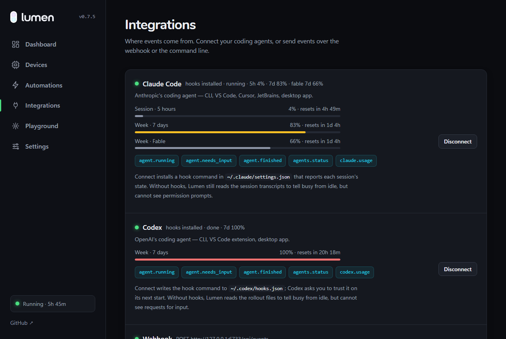
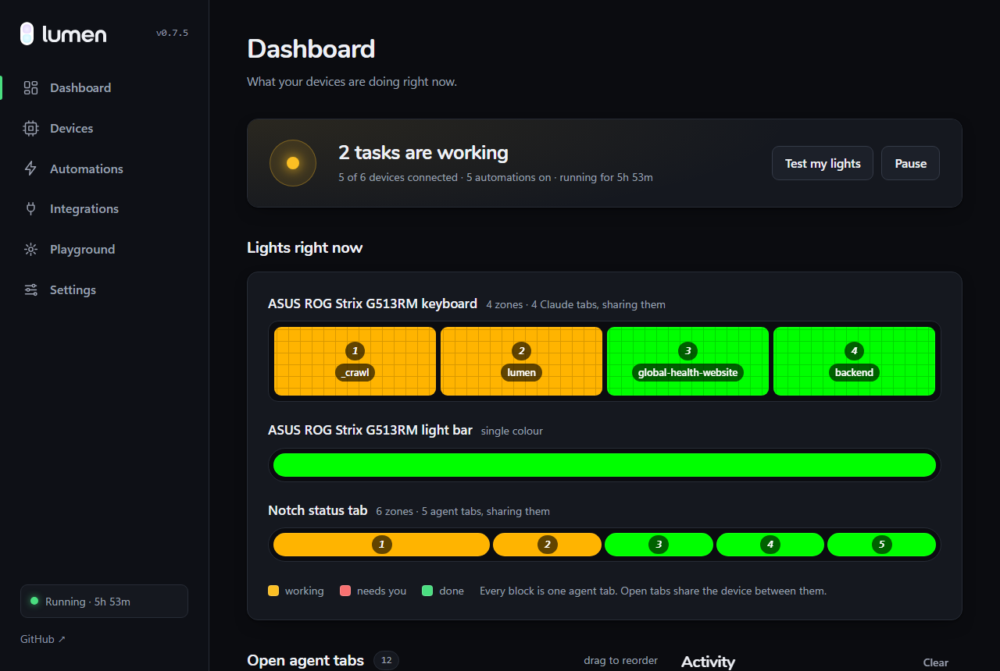
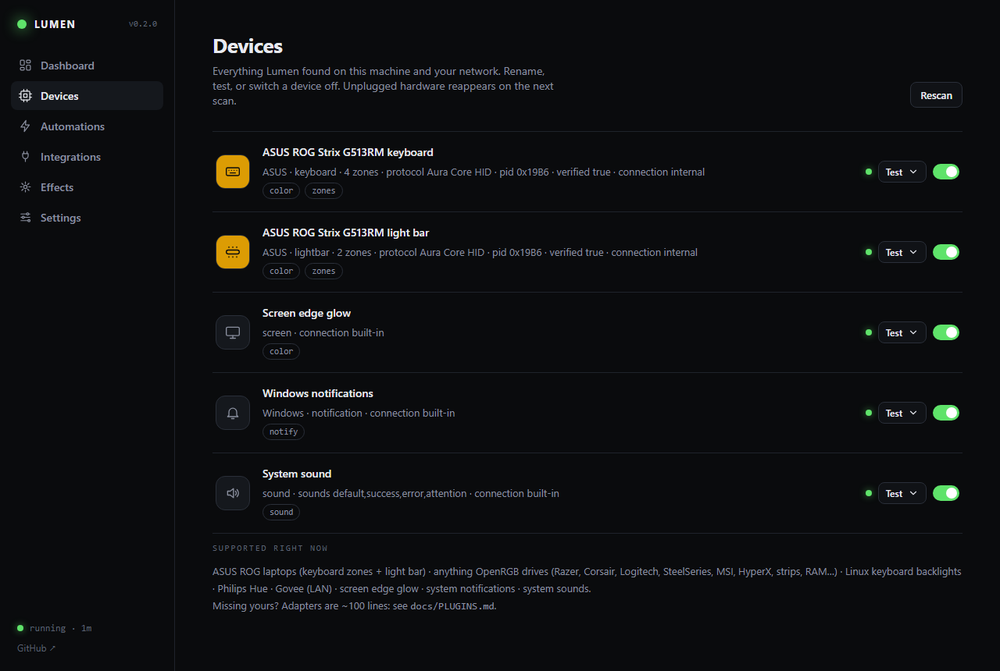
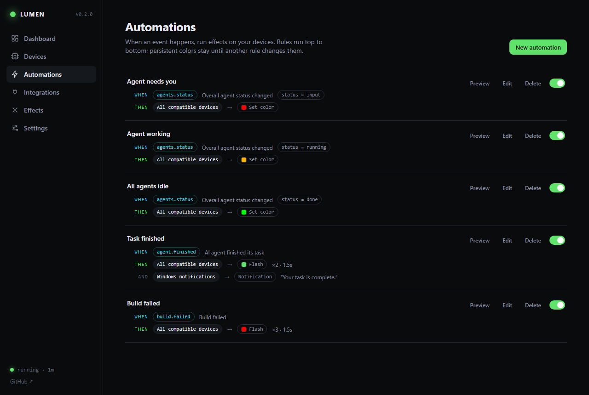

Local daemon · Windows, macOS, Linux
Something happens on your computer.
The devices around you react.
Your coding agent needs an answer. A build fails. A twenty-minute command finally ends. Lumen turns those moments into light you can see without looking — on the keyboard, the light bar, the lamp behind your monitor, the edge of the screen, or just a notification and a sound.
curl -fsSL https://brxerq.github.io/lumen/install.sh | shNo Python needed · every install option · first run opens the dashboard
All agents idle agents.status
Top field: keyboard zones. Bottom field: light bar. Same two surfaces the daemon drives on real hardware.
01The default rules
Three colors, one glance.
A fresh install mirrors your agents' overall status on every light it finds. Nothing to configure before it is useful.
Red — waiting on you
An agent asked a question or hit a permission prompt and stopped.
agents.status · input
Amber — working
At least one agent is running. Leave it alone; it does not need you.
agents.status · running
Green — idle
Everything finished. A completed task also flashes green twice.
agents.status · done
On a keyboard or light bar with zones, one zone becomes one agent tab, so ten Claude Code windows are ten separate lights instead of one summary.
02On your machine
The same event, on whatever you own.
Lumen asks each device what it can do and picks the best way to say it. Four zones become four agent tabs. A per-key board gives every tab its own key. A MacBook with nothing to light gets the screen edge, a notification and a sound. Here is one scenario playing out on each.
Two agents working agents.status · running
Sections, not single keys
Most laptop boards light in blocks rather than per key. Lumen gives one block to one agent tab, so a glance down the keyboard says which window is waiting. The light bar underneath folds all of them into one overall color.
asus_aura · openrgb
ASUS Aura laptops · zoned boards · strips · fans
No RGB? It still works.
On a MacBook — or any machine with nothing to light — Lumen draws a thin always-on-top glow around the edge of the screen, posts a native notification when a task lands, and plays a sound. On a MacBook the keyboard backlight pulses too. Nothing to buy, nothing to plug in.
screen · notification · sound · mac_backlight · linux_backlight
macOS · Windows · Linux
One key, one agent
Where the hardware addresses single keys, every agent tab gets its own — up to ten. Choose the keys in the dashboard; the rest of the board is left alone, so your own lighting profile survives.
openrgb · per-key
Razer · Corsair · Logitech · SteelSeries · MSI
03The status tab
A notch that hangs from the top of the screen.
No RGB, no lamp, no light bar? A small always-on-top tab sits under the menu bar on Windows, macOS and Linux: one soft bar per open Claude or Codex tab, in its status colour, filling up as that tab's context window does. Hover to unfold it.
The terminal or IDE that owns that session is raised — Windows, macOS, Linux.
Top centre, top left or right, the bottom edge to keep clear of a MacBook's notch, or folded along the left or right side. Drag it anywhere along its edge and it stays there.
Each bar wears a small cap in its agent's colour — Claude orange, Codex blue — so you know whose tab it is before you read it.
Hides itself when no tab is open, while a game or film runs full screen, or after any number of idle minutes you pick — and is back the moment an agent does something.
04What it knows
What each tab is doing, what it holds, what it costs.
The hooks report more than busy or idle. Lumen reads the transcript and the login your agent already has, so the numbers you would otherwise go looking for are on the tab, on the dashboard, and in the rule builder.
How full each tab's window is — 200k, or 1M for [1m] models — read from the last assistant turn. It is the fill of the bar.
“Editing api.py”, “Running: pytest -q”, “Asking you”, and the session's token total in dollars beside it.
Lumen asks the same endpoint Claude Code's /usage does, with the login Claude Code already holds, every five minutes: the 5-hour window, the 7-day window, and each per-model week. Codex the same, from its own login.
Every meter carries its reset countdown, and after a few samples a line like “at this pace, full in 1h 40m”. A reading that goes stale is dropped, not shown as current.
WHEN claude.usage · five_hour_used >= 90
THEN light bar · pulse red

05The live board
Open tabs share the whole device.
One tab lights the whole keyboard. Two take half each. Three across four zones take 2 / 1 / 1 — never a dark zone that reads as broken hardware. The dashboard draws every device the way the hardware shows it, one block per tab, labelled with the tab it is showing.
Point the keyboard at Codex and the light bar at Claude from an “agent tabs” menu on each device row, or switch a device out of agent status entirely.
Under a line saying how many zones you have and what to do about it — not silently sitting there looking identical to the ones that are lit.
Pausing stops reacting; a setting keeps the device held instead of handing it back, so the light does not vanish with it.

06Hardware
It uses what you already own.
Plug in, scan, done — Lumen detects devices and learns what each one can do. Effects degrade honestly: a flash on a brightness-only backlight becomes a blink, a wave on a single-zone lamp becomes a pulse.
ROG, TUF and Zephyrus machines that speak Aura Core: keyboard zones and the light bar over raw HID, no vendor software running in the background. Verified on the ROG Strix G513RM; other Aura Core models are detected and marked unverified.
Most other RGB laptops and boards: Razer, Corsair, Logitech, SteelSeries, MSI, HyperX, Gigabyte, plus RAM, fans and strips. Enable the OpenRGB SDK server once; Lumen starts it for you when it is installed but idle.
The Hue bridge is found automatically and the previous light state is restored after an effect. Govee runs on its LAN API — turn on LAN Control in the app, no cloud key.
A plain laptop still gets a thin always-on-top glow at the edge of the screen, a
native notification, and a sound. Keyboard backlights pulse too: MacBooks through
CoreBrightness, Linux laptops through /sys/class/leds.
Missing your hardware? An adapter is one small Python module — most are under 100 lines. Read the plugin guide →
07Events
Where the signals come from.
Agents get first-class hooks with a hook-free fallback. Everything else is one command or one POST away.
CLI, VS Code, Cursor, JetBrains and desktop. One-click hook install, plus a transcript fallback when hooks are unavailable.
CLI, VS Code and desktop, with the same hook install and a rollout fallback.
Polls gh run list for the repositories you pick and reports success or failure.
Wrap a slow command, fire a custom event, or run a timer.
A local endpoint for anything else that can send JSON.
# tell me how the build ended $ lumen exec -- npm run build command.succeeded · flash green ×2 # any event you like $ lumen emit deploy.succeeded --data name=api # a pomodoro that ends in light $ lumen timer 25m --name pomodoro # or from anything that speaks HTTP $ curl -X POST localhost:6733/api/events \ -d '{"type":"build.failed","data":{"name":"web"}}'
08Under the hood
One small pipeline.
Every source emits the same kind of event and every rule reads the same bus, so adding an integration or a device adapter never touches the core.
terminal · webhook
+ activity log
THEN actions
screen · lights
Transient effects layer over a base color at 30 fps, and the hardware is only written to when something actually changes. Read the architecture notes →
09Automations
Rules you can read out loud.
Every automation is one sentence: when this event arrives — optionally filtered on its data — do these things. Built in a visual editor, stored as plain JSON, no config file to learn.
Actions target one device or every compatible device at once. Set color and turn off persist; flash, pulse and wave play for a few seconds and hand the base color back. Reduce flashing in Settings turns every flash into a smooth pulse no faster than 2 Hz.


10Privacy
It never leaves the machine.
Lumen is a tray daemon with a dashboard on 127.0.0.1:6733.
There is no account to make and no server to trust, because there is no server.
The local API refuses cross-origin and DNS-rebound requests. Being on localhost was never meant to be the whole defence.
The dashboard loads nothing from the internet — fonts included. Lumen leaves your network only on a button you pressed: the update check, and Philips' bridge lookup if pairing a Hue finds none on your own LAN. Discovery and every light stay local.
A few thousand lines of Python and one static dashboard, MIT licensed, tested on Windows, macOS and Linux in CI.
11Get started
Two minutes to the first flash.
Install, run, and the dashboard walks you through it: scan for hardware, test each device, connect your agents, pick what a finished task looks like.
curl -fsSL https://brxerq.github.io/lumen/install.sh | shirm https://brxerq.github.io/lumen/install.ps1 | iexlumenEach line downloads the build for your platform from the
latest release,
checks it against the published SHA-256 and refuses to install anything that does not match.
After that Lumen updates itself from Settings → About.
Have Python 3.11+ and prefer to build from source?
pip install git+https://github.com/Brxerq/lumen.
Not from PyPI — the name lumen there belongs to an
unrelated project.